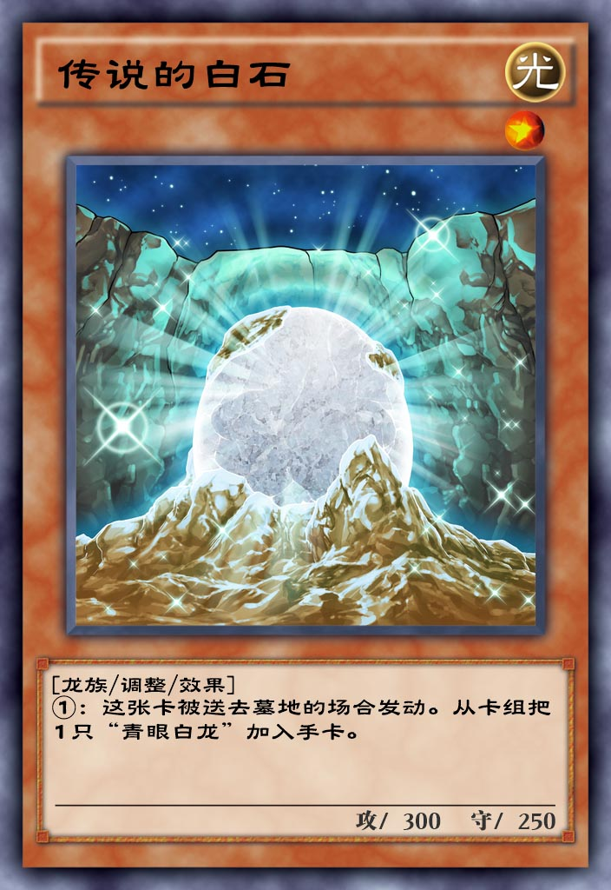

| 中文名 | 传说的白石 |  |
| 日文名 | 伝説の白石 | |
| 英文名 | The White Stone of Legend | |
| 卡片种类 | 怪兽 效果 调整 | |
| 数据库编号 | 7850 | |
| 使用限制 | 无限制 | |
| 种族 | 龙 | |
| 属性 | 光 | |
| 星级 | 1 | |
| 攻击力 | 300 | |
| 防御力 | 250 | |
| 罕见度 | 稀有 | |
| 获取方式 | 钻石星尘 | |
| 字段 | ||
废品 |
||
| 链接 | ||
百鸽 Yu-Gi-Oh! Wikia |
||
| 效果 | ||
①：这张卡被送去墓地的场合发动。从卡组把1只「青眼白龙」加入手卡。 |
||
| 调整 | ||
[传说的白石] <伝説の白石> [09/09/09] ◇诱发效果（进入连锁） ◇强制发动 ◇效果处理时从自己卡组选择1只「青眼白龙/青眼の白龍」（不取对象） ◇对方根据公开情报或者自己展示手卡有3只「青眼白龙/青眼の白龍」，这张卡效果发动的场合，对方仍可以要求确认卡组 |
||
| 笔记 | ||
1. 被送去墓地的场合发动。所以不一定要从场上, 可以从手牌, 也可以从卡组。
2. 能被青色眼睛的贤士检索。
3. 能被金华猫和天轮的葬送士复活。
4. 这张卡的攻防是青眼白龙的十分之一。
5. 这张卡相对于真红眼黑龙的传说的黑石，但是没有相对于黑龙之雏的白龙版本。
6. 这张卡出现在同调的宝牌的卡图上。也能配合这张卡。
|
||